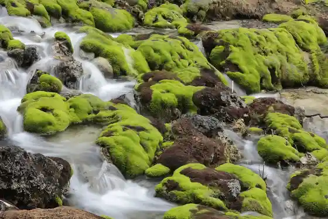
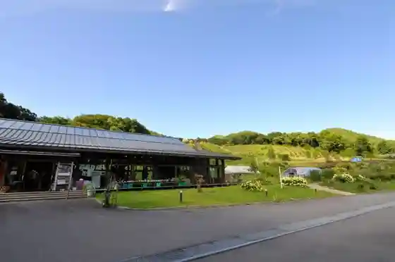
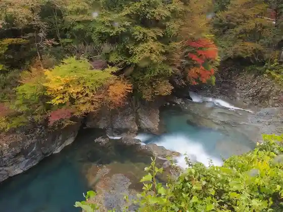
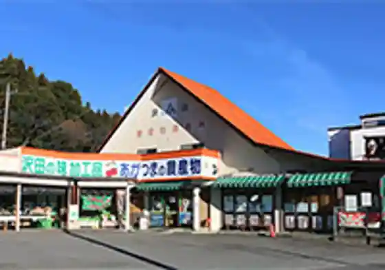

Shima Buru (Shima Mizumi Oku Shima Mizumi)
Nakanojo, Gunma · 0279-75-8814 · Official / source link
Chatsubomigoke Park
Nakanojo, Gunma · 0279-95-5111 · Official / source link

Nakanojo Hana Raku Village
Nakanojo, Gunma · 0279-80-7123 · Official / source link

Shima Oketsu
Nakanojo, Gunma · 0279-64-2290 · Official / source link

Agatsuma Nokyo Sawada Chokubai Tokoro
Nakanojo, Gunma · 0120-76-1204 · Official / source link

Yaki Manju Shima Village
Nakanojo, Gunma · 0279-64-2735 · Official / source link
Kissa
Nakanojo, Gunma · 0279-64-2688 · Official / source link
Soba Zanmai Nakajima Ya
Nakanojo, Gunma · 0279-64-2400 · Official / source link
Jikasei Kona Teuchi Chi Sobadokoro Komatsu Ya
Nakanojo, Gunma · 0279-64-2609 · Official / source link
Gyoza to Ramen no Senmonten
Nakanojo, Gunma · 0279-64-2555 · Official / source link
O Shokuji Tokoro Matsuzuki
Nakanojo, Gunma · 0276-64-2602 · Official / source link
Joshu Ushi Shima Blue Cafe
Nakanojo, Gunma · 0279-64-2155 · Official / source link
Kafeterasu Maya
Nakanojo, Gunma · 0279-64-2351 · Official / source link
Unagi Shokuji Tokoro
Nakanojo, Gunma · 0279-64-2006 · Official / source link
Tonkatsu Asunaro
Nakanojo, Gunma · 0279-64-2159 · Official / source link
Kare Itarianramen Kashiwa Ya Kafe
Nakanojo, Gunma · 0279-64-2414 · Official / source link
Sushi Ichiriki Sushi
Nakanojo, Gunma · 0279-64-2502 · Official / source link
Keki Kohii Mori no Kafe KISEKI
Nakanojo, Gunma · 0279-64-2290 · Official / source link
Nozori Mizumi
Nakanojo, Gunma · 0279-95-3111 · Official / source link
Gotanda no Soba Hatake
Nakanojo, Gunma · 0279-75-8814 · Official / source link
Rekishi to Minzoku no Museum Myuze
Nakanojo, Gunma · 0279-75-1922 · Official / source link
Roadside Station Ryosen Takeyama
Nakanojo, Gunma · 0279-75-7280 · Official / source link
Roadside Station Kuni
Nakanojo, Gunma · 0279-95-3342 · Official / source link
Kuni Shitei Juyo Bunkazai Hyuga Ken Yakushido
Nakanojo, Gunma · Official / source link
Kuresaka Toge
Nakanojo, Gunma · 0279-95-3111 · Official / source link
Oku Shima Mizumi Kanu Experience
Nakanojo, Gunma · 0279-56-3999 · Official / source link
Shiri Yaki Onsen
Nakanojo, Gunma · 0279-75-8814 · Official / source link
Otoku Onsen
Nakanojo, Gunma · 0279-95-3122 · Official / source link
Sawatari Onsen
Nakanojo, Gunma · 0279-75-8814 · Official / source link
Otsuka Onsen
Nakanojo, Gunma · 0279-75-3073 · Official / source link
Nakanojo Garden Zu
Nakanojo, Gunma · 0279-75-7111 · Official / source link
Kyu Taishi Eki
Nakanojo, Gunma · 0279-95-3055 · Official / source link
R-LABO (Shima Mizumi SUP Tour)
Nakanojo, Gunma · 090-9389-2250 · Official / source link
I San Sutajio Park
Nakanojo, Gunma · 0279-75-7220 · Official / source link